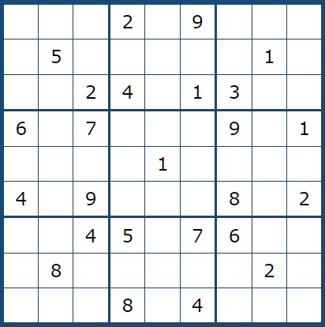
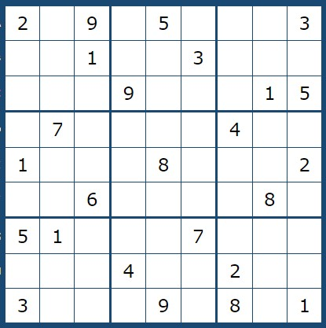
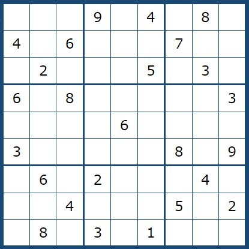

|
Sudoku Çözme Süresi
Sudoku bulmacalarını çözerken süre tutmak bulmacayı daha eğlenceli hale getirebilir.Sudoku çözme süresi kişiden kişiye ve bulmacanın zorluğuna göre değişir.Bolca pratik yaparak teknikleri keşfederek veya öğrenerek bulmaca çözme hızınızı arttırabilirsiniz.Peki bir sudoku şampiyonu bir bulmacayı çözmek için ne kadar zaman harcıyordur? İlki 2006 yılında gerçekleştirilen Dünya Sudoku Şampiyonası her yıl düzenlenmektedir.Aşağıda 2009 ve 2010 yıllarında dünya sudoku şampiyonunun çözdüğü sorularla birlikte bu soruları ne kadar sürede çözdüğü verilmiştir. İsterseniz inceleyebilirsiniz. |
06:47 dakika |
04:40 dakika |
02:33 dakika |
|  |  |  |